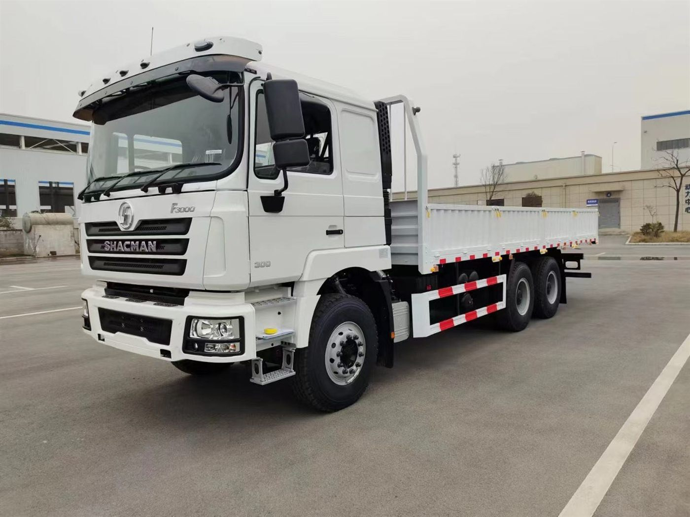

SHACMAN Cargo Truck for Export
For logistics companies, distributors and contractors comparing SHACMAN cargo truck, lorry truck, flatbed truck and box truck configurations for overseas procurement.

Cargo trucks matched to route and load
A useful cargo truck quotation starts from what you carry, how far it moves and what road conditions the truck will face.
Cargo type
General cargo, building materials, pallet goods, project cargo or enclosed delivery.
Body dimensions
Confirm body length, width, sideboard height and loading method before quotation.
Route conditions
Urban, highway, rough road and mountainous routes affect the chassis choice.
Cargo truck quotation checklist
| Item | What to provide | Why it helps |
|---|---|---|
| Payload | Expected cargo weight and legal limit | Guides chassis, axle and tire selection |
| Body type | Flatbed, stake, van, box or special body | Defines upper body and loading method |
| Market | Destination, emission, steering side and port | Improves quotation accuracy |
| Fleet plan | Quantity and delivery schedule | Supports pricing and shipping discussion |
From model page to real enquiry
Cargo truck buyers often need more than a model name. Andy can discuss cargo, payload, body length, route and export documents before a formal quotation is prepared.
Can a SHACMAN cargo truck be quoted as a box truck?
Yes. Box body, van body or stake body can be discussed according to use and destination rules.
Can I request parts with the truck?
Yes. Wearing parts and service parts can be included in the enquiry discussion.
Do you support SAGMOTO cargo trucks?
Yes. SAGMOTO alternatives can be discussed for non-European markets when suitable.
Request a cargo truck quote
Send cargo, payload, body length, destination and quantity.